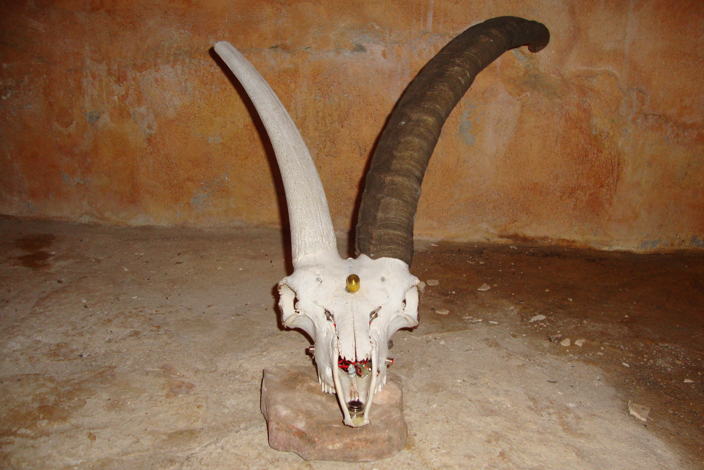
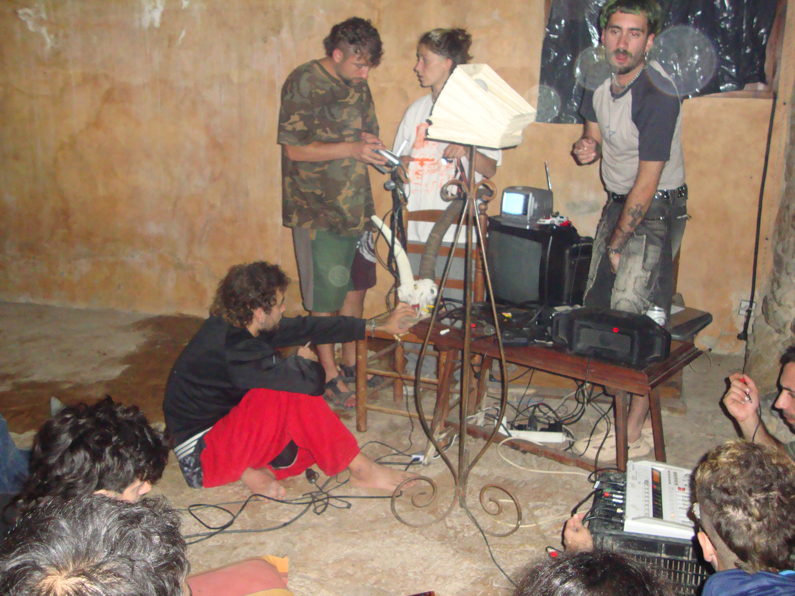
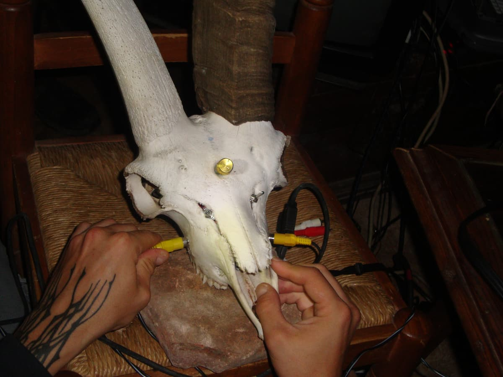
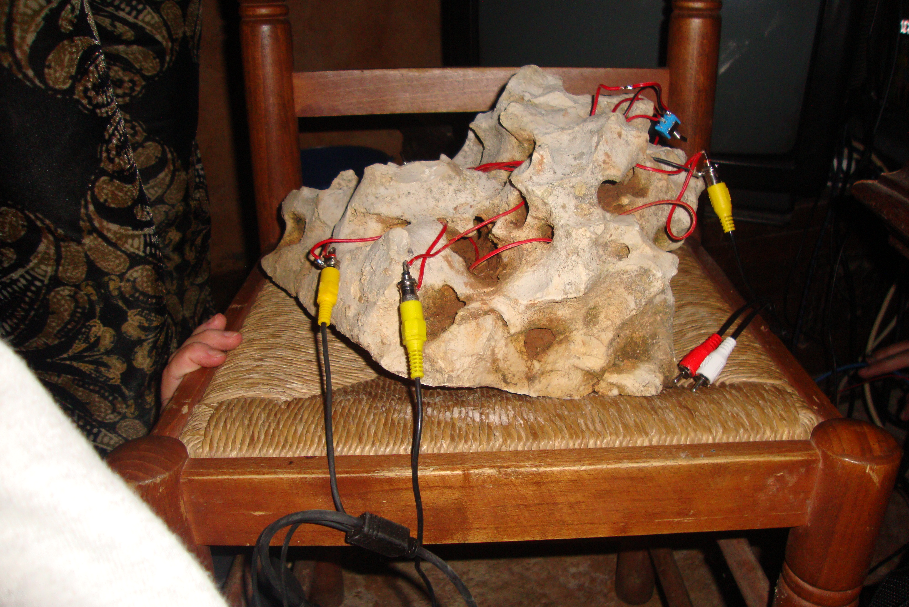
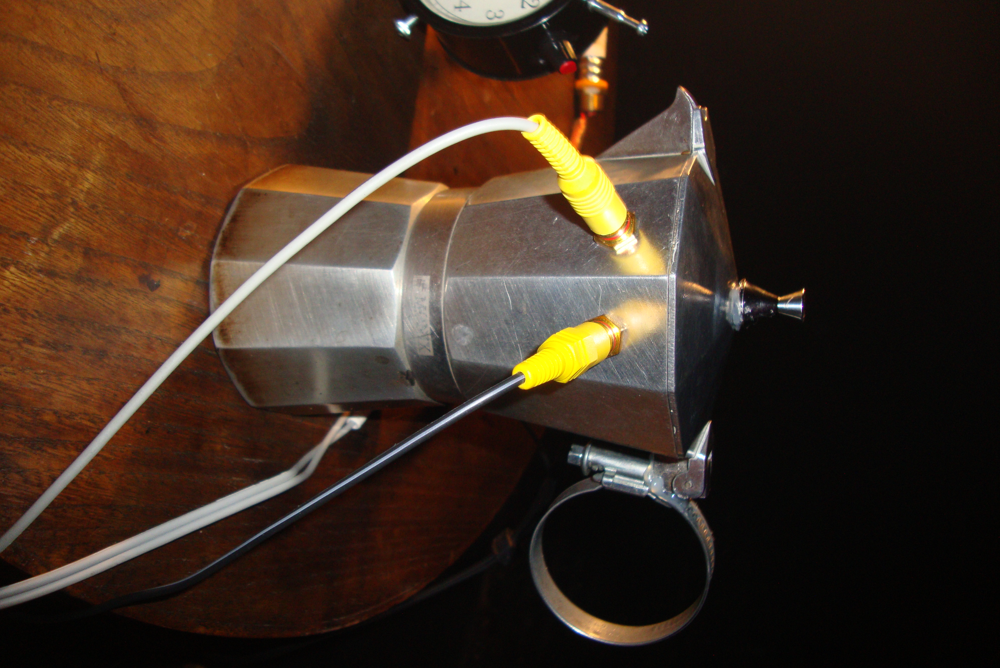
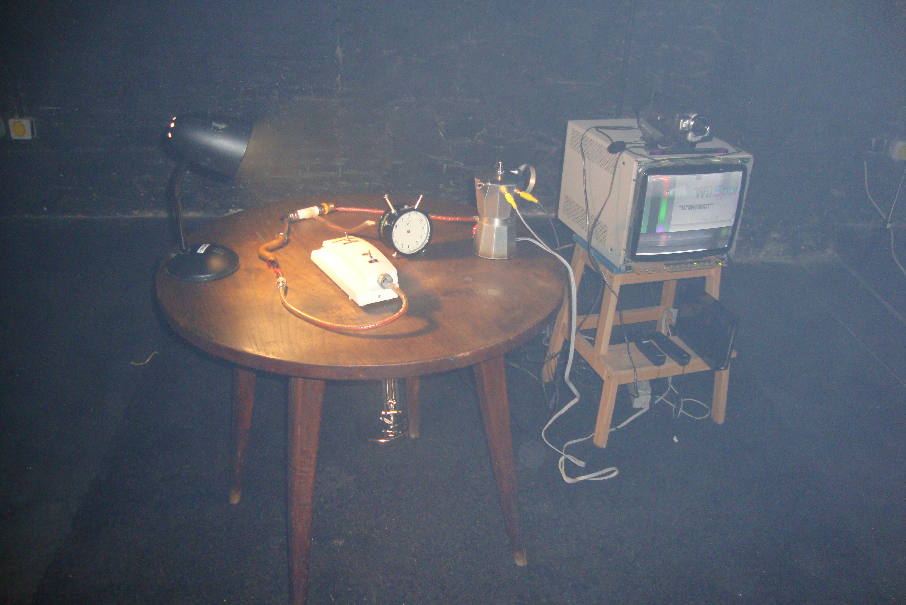
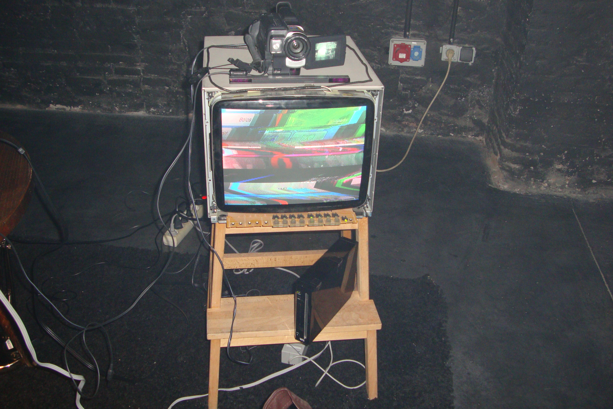
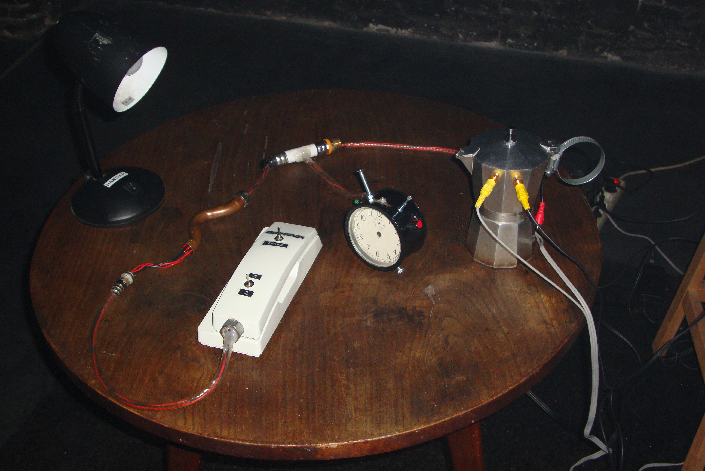

Dirty Video Mixer.
DIRTY VIDEO MIXER.
Circuito Analògico. Intalación Interactiva. Talleres
[2024]

Dirty Video Mixer.







El Dirty Video Mixer es un dispositivo que recibe dos señales de vídeo compuesto y las mezcla para crear efectos psicodélicos, “glitches” e interferencias visuales.
¿Vídeo compuesto? Hoy en día, la imagen se transmite principalmente en formato digital mediante conexiones como HDMI, donde la información viaja codificada en datos digitales (bits). Pero antes, la imagen viajaba como una señal eléctrica analógica a través de un cable amarillo RCA, conocido como vídeo compuesto (CVBS). Por el pin central del conector se transmite toda la información de la imagen: brillo, color y sincronización.
¿Cómo funciona?
Es un circuito pasivo, lo que significa que no necesita alimentación externa ni procesa la imagen. No tiene ningún componente que "piense", la analice o la transforme. Lo que hace es mucho más simple:
El circuito une las dos señales de vídeo en un mismo punto para que interactúen entre sí.
Canal 1 (Cámara) ─────┐
├────► Salida
Canal 2 (Wii) ────────┘
Lo que ocurre es que ambas señales llegan al mismo cable de salida al mismo tiempo. Como cada una contiene su propia información de brillo, color y sincronización, el monitor recibe datos incompatibles e intenta reconstruir una única imagen.
¡El resultado es una gran fiesta de interferencias y distorsiones!